스토리
스토리
새 글이 맨 위에 쌓입니다. 사진과 촬영 이야기를 날짜 순으로 모았습니다.
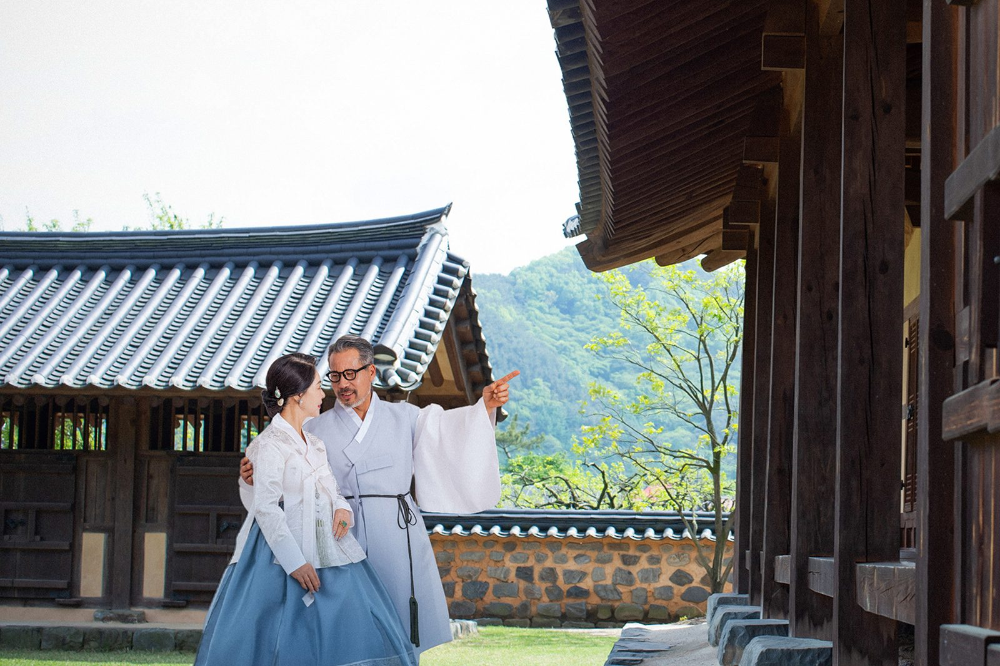
창원 한복 부부사진 — 부부가 다시 나란히 서는 날의 마음
창원 상남동 사랑이야기 스튜디오의 한복 부부사진. 자녀 없이 두 사람만 다시 차려입는 촬영입니다. 처마 아래 마당부터 둥근 창, 등불 켠 밤 정원까지 열두 장에 담았습니다.
읽기 →
의령 한복 가족사진 — 한복을 입으면 가족의 걸음이 느려집니다
의령 궁류면 김작가사진이야기의 한복 가족사진. 설빔을 꺼내 입고 온 가족이 마루에 서면 걸음이 느려지고 말수가 줄어듭니다. 네 명부터 열한 명까지, 스튜디오와 기와 담장 아래에서 찍은 열두 장입니다.
읽기 →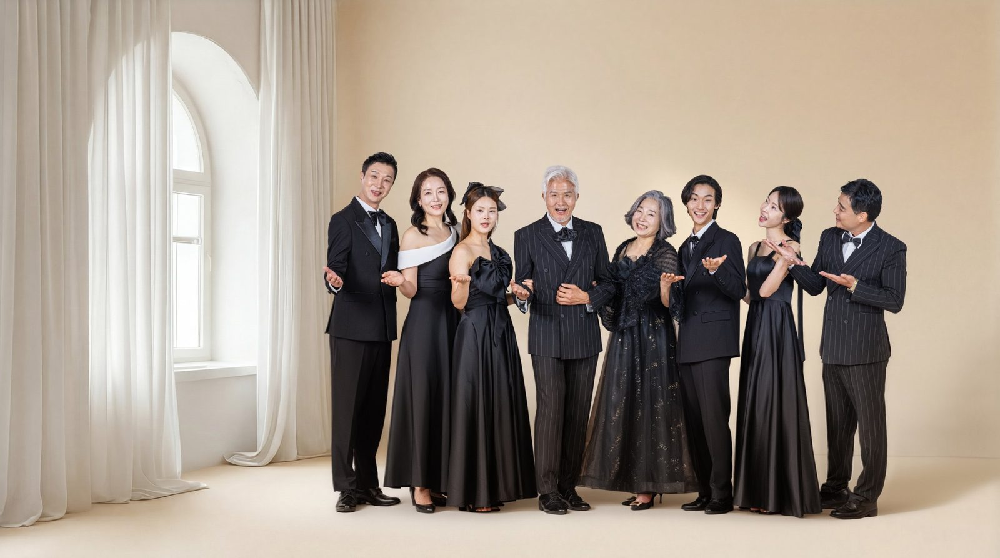
창원 정장 가족사진 — 온 가족이 같은 색을 입는 날의 마음
창원 상남동 사랑이야기 스튜디오의 정장 가족사진. 검정 정장과 검정 드레스로 온 가족이 한 줄에 서면 사진의 무게가 달라집니다. 세대가 섞인 대가족부터 어르신 두 분만의 컷까지 열두 장에 담았습니다.
읽기 →
창원 세미웨딩 가족사진 — 드레스 입은 딸과 정장 입은 아들이 한자리에
창원 상남동 사랑이야기 스튜디오의 세미웨딩 가족사진. 흰 레이스 드레스와 네이비·베이지 수트를 맞춰 입고 세 세대가 한자리에 모였습니다. 세 세대가 한자리에 모인 날의 순서와 준비를 김작가가 정리했습니다.
읽기 →
창원 블랙앤화이트 가족사진 — 색을 덜어내면 표정이 남는다
창원 상남동 사랑이야기 스튜디오의 블랙앤화이트 캐주얼 가족사진. 검정과 흰색만 맞춰 입고 무채색 배경 앞에 서면 얼굴과 손이 먼저 보입니다. 세 식구부터 여덟 식구까지 열두 장에 담았습니다.
읽기 →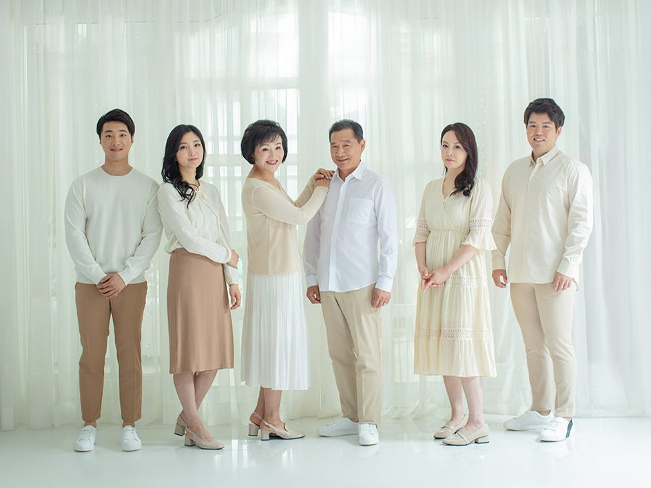
창원 캐주얼 가족사진 — 같은 색을 입는 순간 가족은 한 편의 사진이 된다
창원 상남동 사랑이야기 스튜디오에서 찍은 캐주얼 가족사진 이야기. 흰 커튼 앞 여섯 식구부터 하늘색 배경, 풍선과 솜사탕, 꽃 덩굴이 있는 야외까지 열두 장에 담았습니다. 색을 맞추는 법과 촬영 순서를 김작가가 천천히 풀어 놓습니다.
읽기 →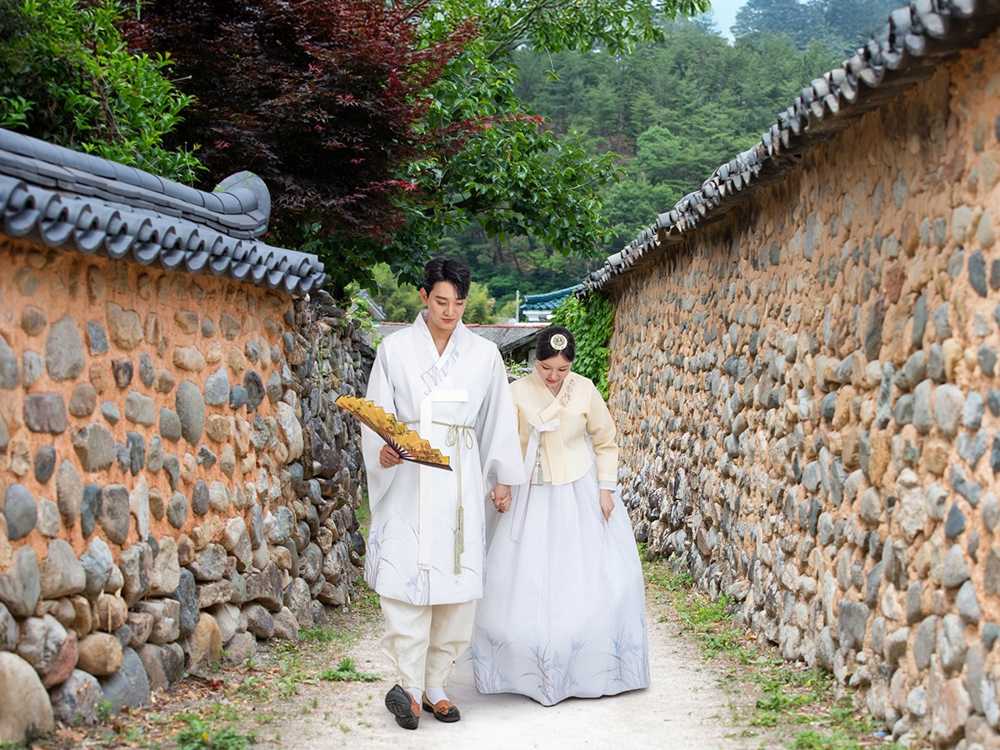
의령 한복부부사진 — 함께 걸어온 계절을 사진에 담는 일
돌담길을 걷고, 물가에 앉고, 웃음이 터지는 순간까지. 오래 함께한 두 사람의 지금을 15장에 담았습니다.
읽기 →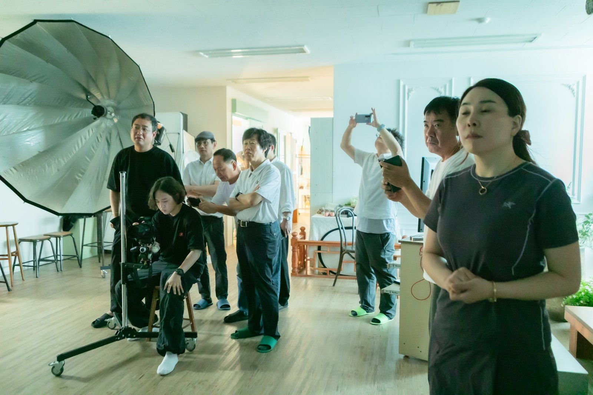
창원·마산·진해 우정사진 — 다섯 친구, 다섯 가지 표정
체육복부터 드레스까지 컨셉을 나누고, 단체 컷과 클로즈업을 함께 담은 우정사진. 기다려서 찍는 김작가의 방식이 담겨 있습니다.
읽기 →
창원 사진관 소개 — 김작가 사진이야기, 시간이 쌓인 자리
상남동 롯데빌딩 2층. 로비와 스튜디오, 의상실과 메이크업실, 원목 액자를 만드는 작업실까지 한자리에 있습니다.
읽기 →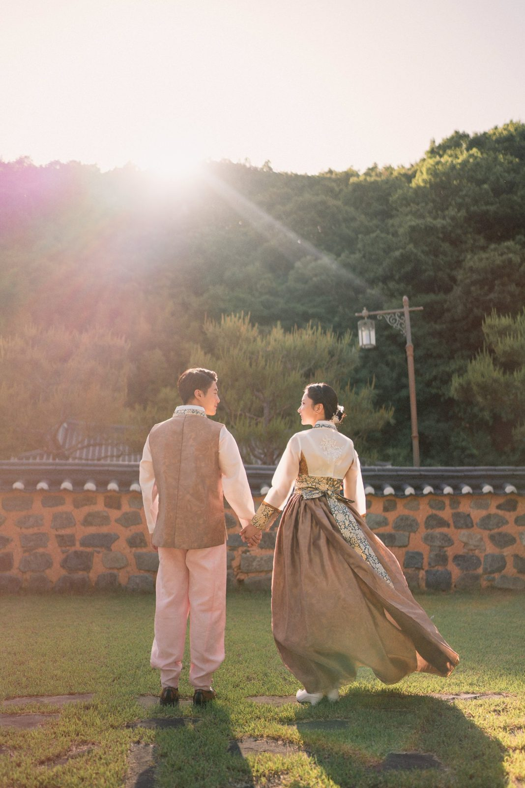
창원 야외 스냅 — 두 사람의 하루를 사진으로 남기는 방법
장소보다 시간이 먼저입니다. 빛이 부드러운 시간대와 짧은 동선, 어색하지 않은 포즈까지 야외 촬영의 기준입니다.
읽기 →
창원 증명사진 — 규정에 맞으면서 내 얼굴이 살아 있는 사진
여권 35x45mm, 흰 배경, 귀와 눈썹 노출. 규격은 지키고 표정은 살립니다. 마음에 들지 않으면 그 자리에서 다시 찍습니다.
읽기 →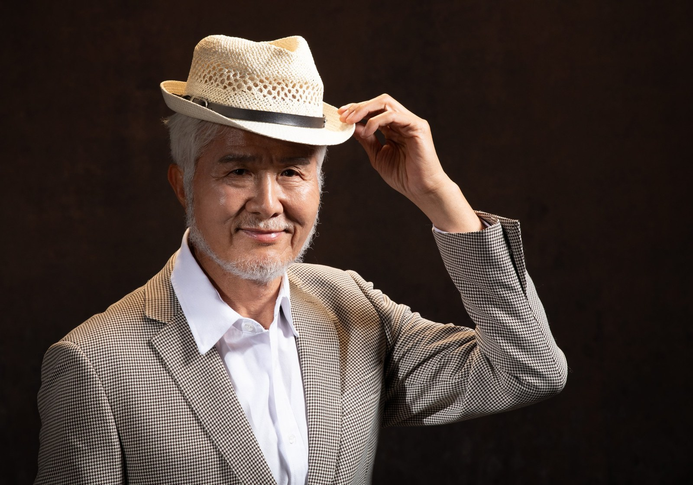
창원 장수사진 — 부모님의 여든을 가장 환한 얼굴로 남기는 일
칠순·팔순을 앞두고 한복을 입고, 밝은 조명 아래에서 남기는 초상입니다. 필요할 때 영정으로도 쓰이는 사진입니다.
읽기 →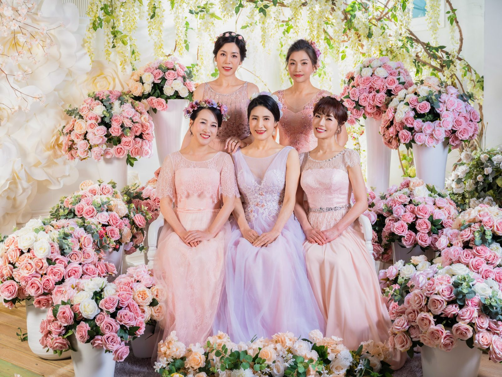
창원 우정사진 — 오십 년 친구와 다시 교복을 입는 날
교복부터 드레스까지, 그때 입고 싶었던 옷을 다시 입고 웃는 촬영입니다. 친구들과 한자리에 서는 날을 남깁니다.
읽기 →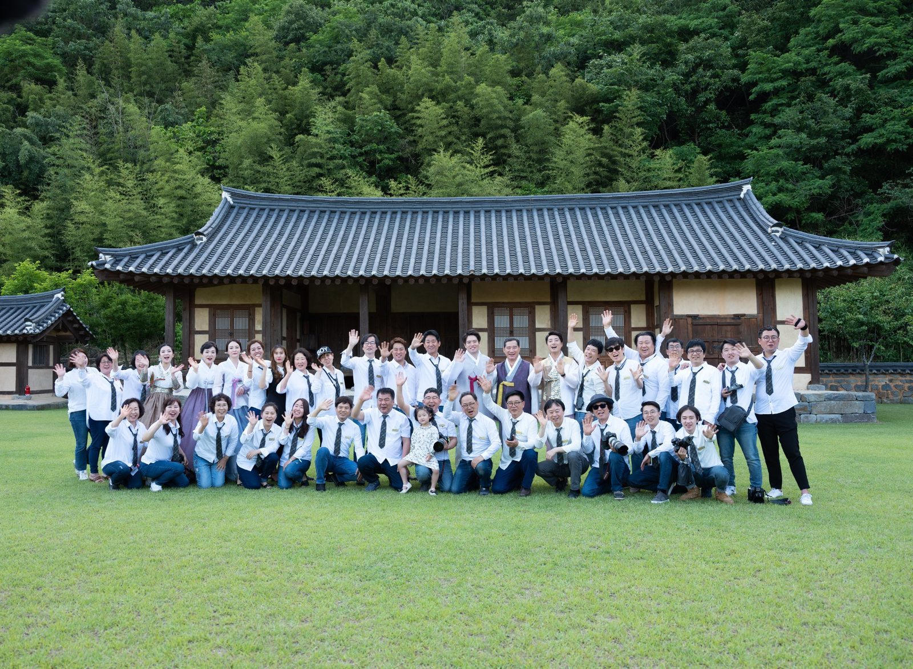
창원 야외 가족사진 — 바람이 지나간 자리에 가족이 선다
의령점 천여 평 야외촬영장에서 빛과 계절을 골라 찍는 가족사진입니다. 아이가 뛰고 어르신이 웃는 그대로를 담습니다.
읽기 →
창원 리마인드웨딩 — 결혼기념일에 다시 입는 드레스
부부 두 분만 다시 서는 촬영입니다. 드레스와 턱시도, 부케까지 준비되어 있고 결혼기념일에 가장 잘 어울립니다.
읽기 →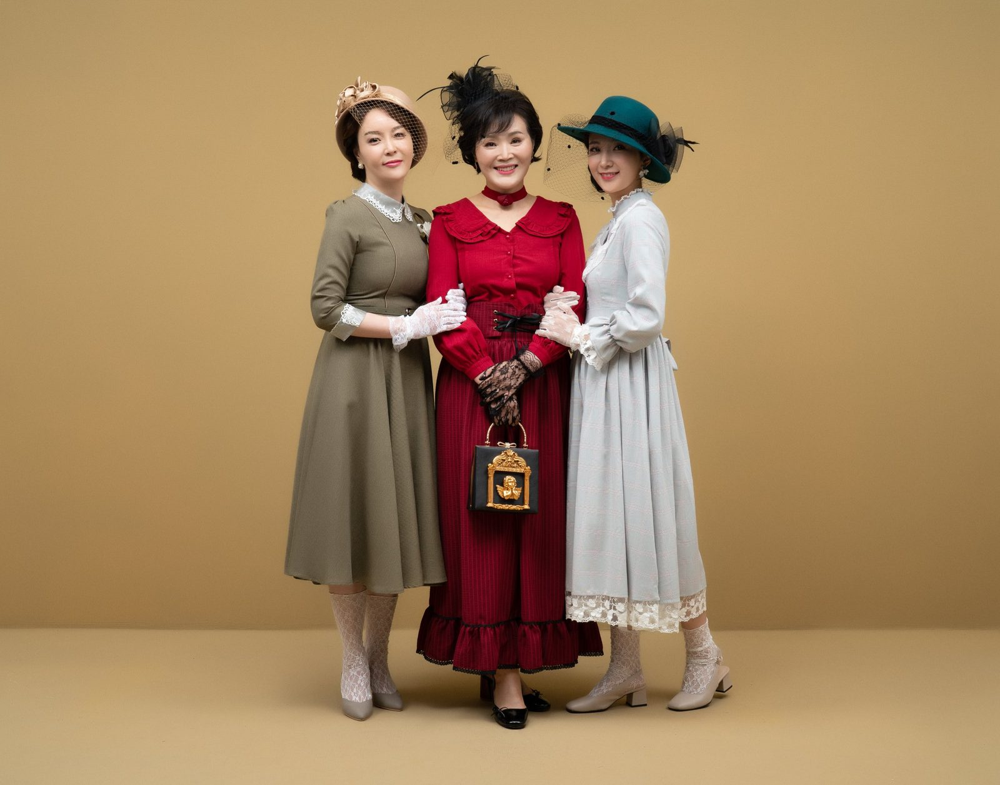
창원 복고 가족사진 — 그 시절 옷을 다시 입으면 사진이 이야기가 됩니다
개화기풍 원피스와 클래식 정장, 모자와 양산까지. 옛 시절 옷을 다시 입으면 사진이 한 편의 이야기가 됩니다.
읽기 →
창원 한복 가족사진 — 설날과 추석, 온 가족이 한복을 입는 날
명절에만 입던 한복을 온 가족이 함께 입는 촬영입니다. 색을 조금씩 다르게 맞추면 사진이 훨씬 밝아집니다.
읽기 →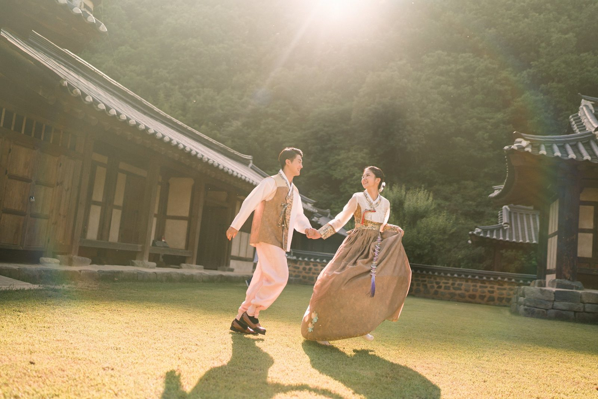
창원 가족사진, 어떻게 하면 행복하게 찍을까 — 컨셉별 촬영 이야기
캐주얼·한복·복고·웨딩·야외까지. 컨셉별로 가족이 웃는 순간을 남기는 방법을 사진과 함께 정리했습니다.
읽기 →
의령 가족사진, 궁류면 청정로 — 김작가 사진이야기에서 하루를 보내는 방법
천여 평 야외촬영장과 독채 펜션. 한복 촬영과 바베큐까지, 서두르지 않는 하루.
읽기 →
창원 가족사진, 상남동 롯데빌딩 2층 — 사랑이야기 스튜디오 창원점 오시는 길
주차부터 예약, 촬영룸·의상실·메이크업실·김스카페까지. 창원점에 오시는 길을 한 번에 정리했습니다.
읽기 →창원 웨딩 가족사진 — 결혼기념일에 온 가족이 다시 드레스를 입는 날
세대가 다른 옷이 한 화면에 모이는 날. 정원 촬영과 김스카페, 준비 안내까지.
읽기 →
창원 세미 가족사진 — 정장 한 벌이 가족을 한 편의 그림으로 만듭니다
정장과 드레스를 입는 순간 달라지는 자세와 표정. 의상실·액세서리와 촬영 이야기.
읽기 →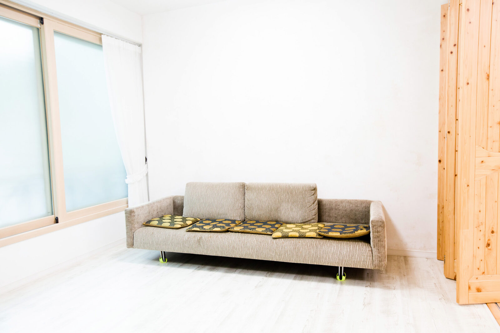
창원 캐주얼 가족사진 — 옷은 편하게, 마음은 가볍게
옷을 맞추는 사진이 아니라 평소의 가족이 그대로 나오는 사진. 촬영룸과 정원, 준비 방법까지.
읽기 →
스튜디오 입구에 커피 한 잔을 두는 이유 — 김스카페
사진관 입구의 김스카페. 기다리는 긴장을 풀고, 촬영이 끝난 뒤 가족이 잠깐 앉는 자리.
읽기 →
의령에서 멀리 오시는 가족을 위해 — 1,000평 안에 펜션을 독채로 열어 두었습니다
의령사진관 옆 1,000평 부지의 독채 펜션. 멀리서 오시는 가족이 하루를 서두르지 않도록 준비했습니다.
읽기 →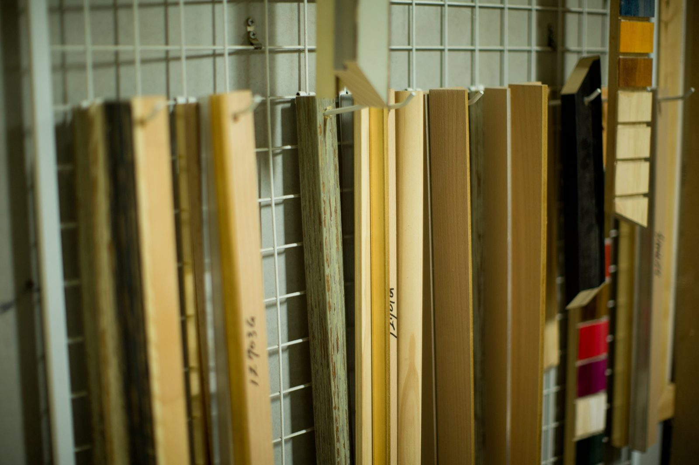
사진은 액자에 들어가는 순간 달라집니다 — 김작가가 원목액자를 직접 만드는 이유
수입 원목으로 원목액자를 직접 제작합니다. 사진과 어울리는 나무를 고르고 모서리를 정확히 맞추는 이유.
읽기 →
사진이 잘 나오는 비결은 카메라가 아니라 메이크업이었습니다
사진이 안 나오는 이유는 대부분 조명과 화장. 촬영과 같은 빛 아래에서 준비하는 스튜디오 메이크업실.
읽기 →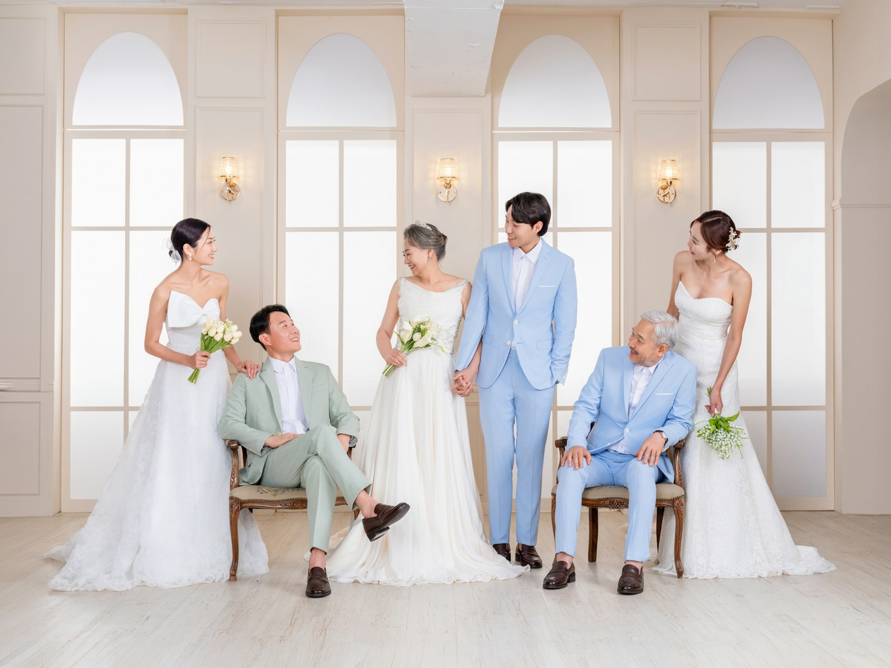
창원에서 의상대여를 전문으로 하는 사진관 — 드레스 한 벌이 사람의 어깨를 펴게 합니다
드레스·정장·한복과 액세서리까지. 가족사진 의상을 톤에 맞춰 준비해 드리는 의상대여 전문 사진관.
읽기 →
창원 사진관에서 서른일곱 해 — 제가 배운 건 사진이 아니라 기다림이었습니다
창원점의 김스카페와 정원, 의령점 1,000평 펜션까지. 서른일곱 해 동안 배운 것은 사람을 기다리는 일이었습니다.
읽기 →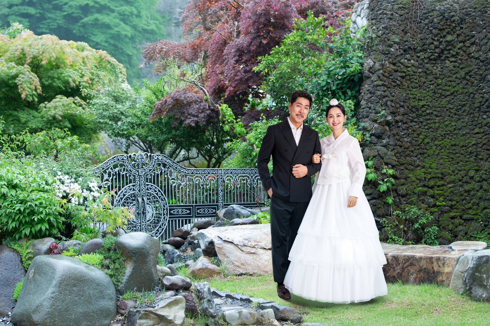
창원 리마인드웨딩 — 가을에 다시 입는 웨딩드레스
부모님이 다시 웨딩드레스와 정장을 입는 날. 가을 빛과 의령 야외촬영장 이야기.
읽기 →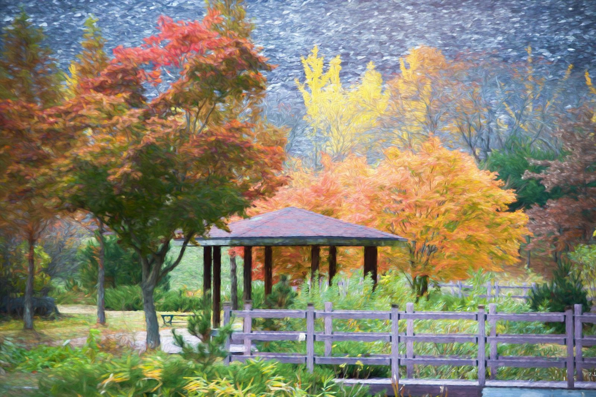
창원 가족사진, 사계절 중 언제 찍으면 좋을까
봄·여름·가을·겨울, 어느 계절에 찍어도 좋은 이유와 계절마다 다른 빛 이야기.
읽기 →
창원 가족사진 잘 찍는 곳, 사랑이야기 스튜디오 창원점입니다
서른일곱 해 창원에서 가족사진을 찍어 온 김작가의 인사. 가족이 편안해야 좋은 사진이 나온다는 이야기.
읽기 →이 분류의 글이 아직 없습니다.